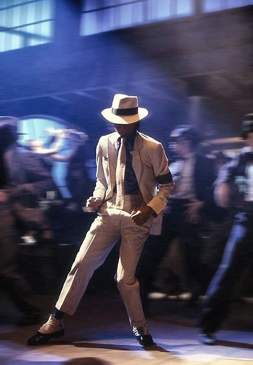
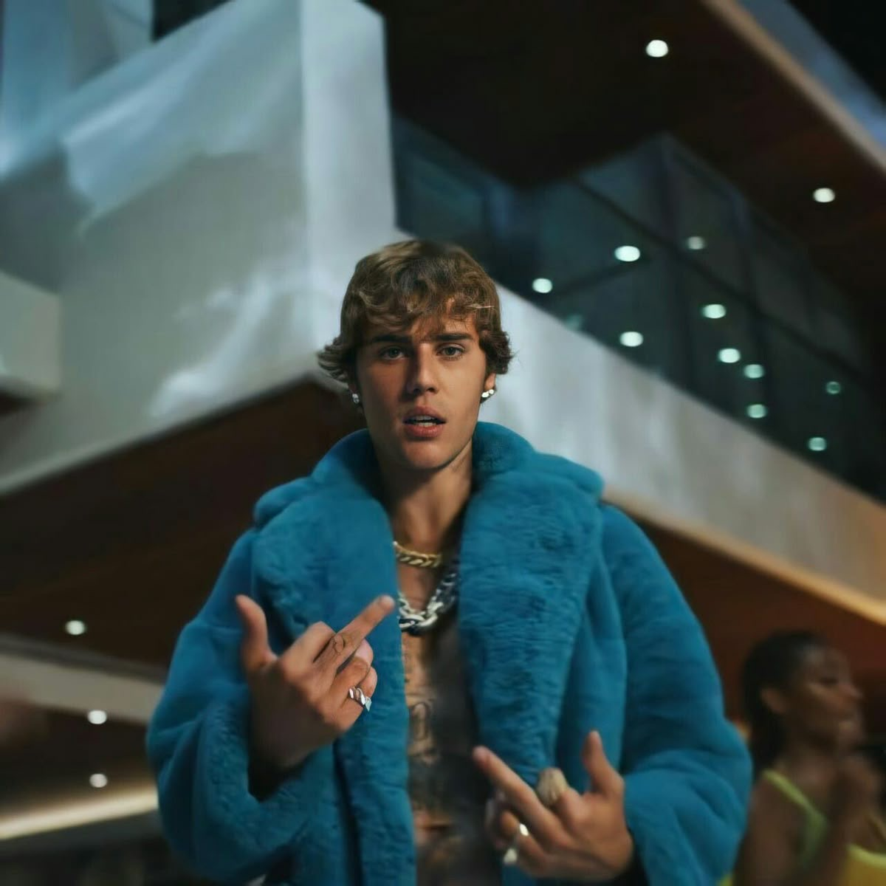
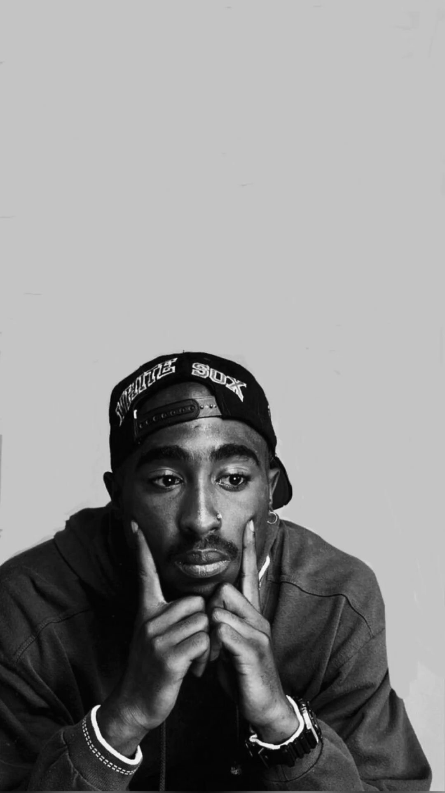
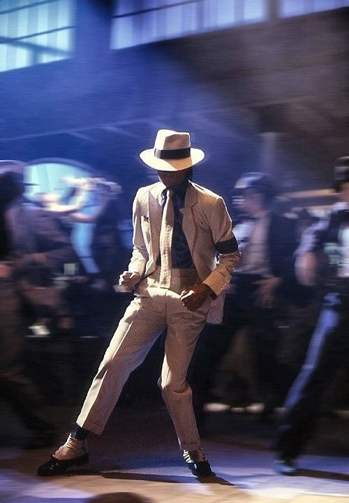
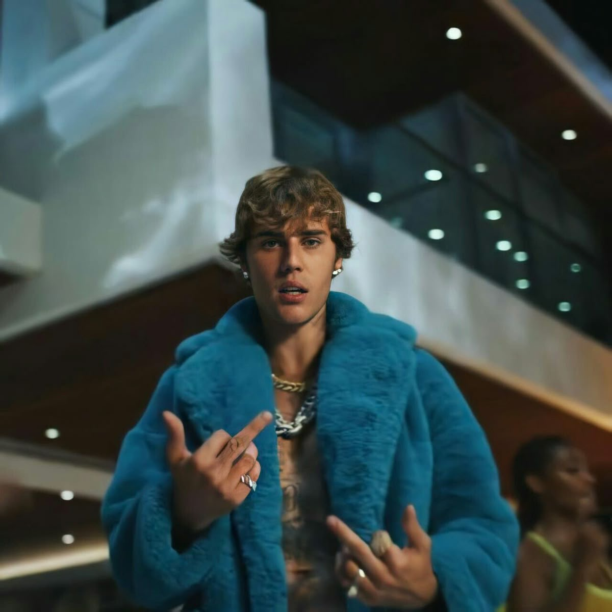
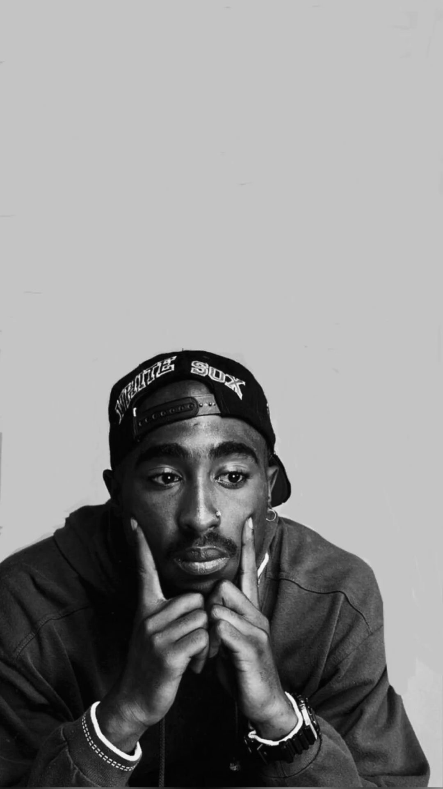

MUSEO
Web oficial — demo retro · reproductor · inspirations
Reproductor
- DesierTÚ (Ft. Mych)
- Museo - Amor de Veranu
- Museo - Trap16
- Session #02 - Museo, Dilow
- Tarde (Dilow, Museo, Derexs)
- Como LEGO (Reggaeton Ver.)
- LOGAN
- Como LEGO (Official Ver.)
- Reggaeton Old
- Type Beat (Prod Mych x Certad)


 




